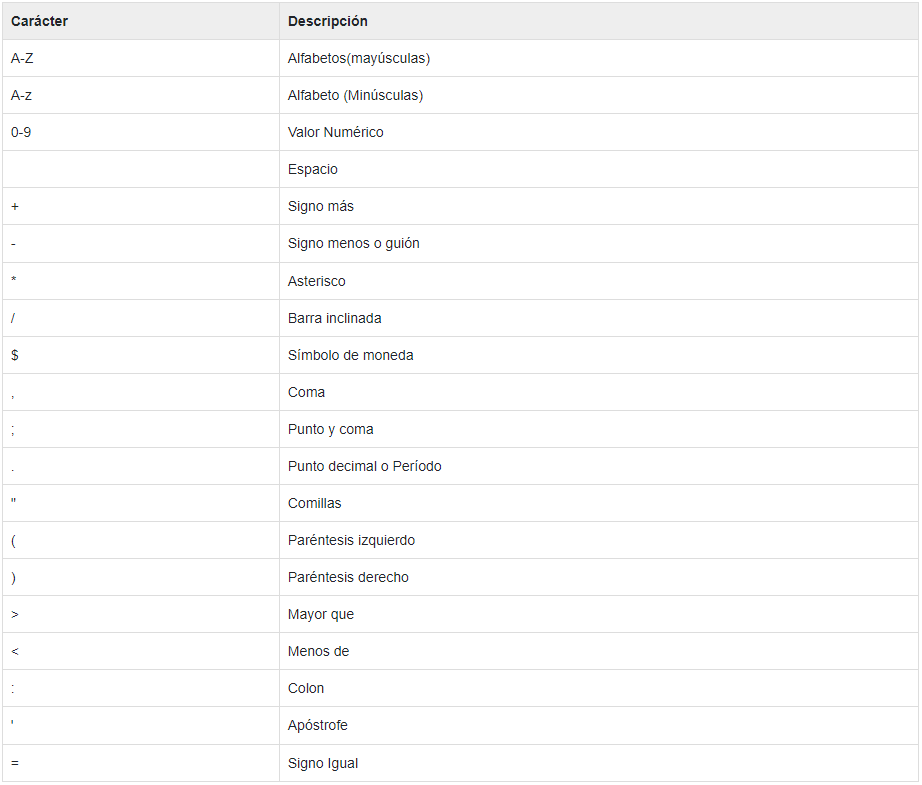
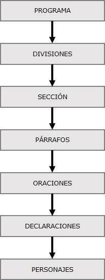

Símbolos
Conjunto de caracteres:

Sintaxis
Esqueleto de los programas
Un programa COBOL estructura consta de divisiones, como se muestra en la imagen siguiente:

Programa COBOL
La estructura de un programa en COBOL es la siguiente:
IDENTIFICATION DIVISION.
PROGRAM-ID. HELLO.
ENVIRONMENT DIVISION.
ㅤㅤINPUT-OUTPUT SECTION.
ㅤㅤFILE-CONTROL.
ㅤㅤSELECT FILEN ASSIGN TO INPUT.
ㅤㅤㅤㅤㅤㅤORGANIZATION IS SEQUENTIAL.
ㅤㅤㅤㅤㅤㅤACCESS IS SEQUENTIAL.
DATA DIVISION.
ㅤㅤFILE SECTION.
ㅤㅤFD FILEN
ㅤㅤ01 NAME PIC A(25).
ㅤㅤWORKING-STORAGE SECTION.
ㅤㅤ01 WS-STUDENT PIC A(30).
ㅤㅤ01 WS-ID PIC 9(5).
ㅤㅤLOCAL-STORAGE SECTION.
ㅤㅤ01 LS-CLASS PIC 9(3).
ㅤㅤLINKAGE SECTION.
ㅤㅤ01 LS-ID PIC 9(5).
PROCEDURE DIVISION.
ㅤㅤDISPLAY 'Executing COBOL program using JCL'.
STOP RUN.
El JCL para ejecutar el programa COBOL es la siguiente:
//SAMPLE JOB(TESTJCL,XXXXXX),CLASS=A,MSGCLASS=C
//STEP1 EXEC PGM=HELLO
//INPUT DD DSN=ABC.EFG.XYZ,DISP=SHR
Cuando se compila y ejecuta el programa antes mencionado, se produce el resultado siguiente:
Executing COBOL program using JCL
Aplicación a descargar para editar y ejecutar
Hay unos cuantos IDEs para editar y ejecutar COBOL, pero uno de los más recomendados es usar el famoso IDE Visual Studio Code que incluye un plugin para trabajar con COBOL llamado Visual Cobol, y el IDE OpenCobolIDE. Es decisión personal cuál usar para trabajar con COBOL.

Paradigma
COBOL pertenece al paradigma imperativo.
Ejemplo
IF-ELSE
En cualquier lenguaje de programación existen sentencias que se cumplen si cumplen alguna condición previamente definida. Imaginemos un escenario donde el usuario introduce un nombre (cadena ó STRING) en el programa. En COBOL, ACCEPT se usa para introducir datos.
*> INTRODUCIR DATOS CON 'ACCEPT'
DISPLAY 'INTRODUCE NOMBRE:'
ACCEPT WS-NOMBRE
ㅤIF WS-NOMBRE EQUAL "ALFIE" THEN
DISPLAY 'HOLA, 'WS-NOMBRE
ㅤELSE
DISPLAY 'BIENVENIDO, 'WS-NOMBRE
ㅤEND-IF.
Nota: Usamos PICTURE X(10) para definir una variable alfanumérica.
*> STORAGE
DATA DIVISION.
ㅤWORKING-STORAGE SECTION.
ㅤ*> DEFINIR UNA VARIABLE 'STRING'
ㅤ01 WS-NOMBRE PICTURE X(10).
Este sería el programa completo:
condicional.cbl
IDENTIFICATION DIVISION.
PROGRAM-ID. TEST6.
AUTHOR ALQUIMISTA DE CÓDIGO.
INSTALLATION. ALQUIMISTA DE CÓDIGO.
DATE-WRITTEN. 25/06/19.
DATE-COMPILED.
SECURITY. NO ES CONFIDENCIAL.
DATA DIVISION.
ㅤWORKING-STORAGE SECTION.
ㅤ01 WS-NOMBRE PICTURE X(10).
*> MAIN DEL PROGRAMA
PROCEDURE DIVISION.
ㅤMAIN.
ㅤDISPLAY 'INTRODUCE NOMBRE:'
ㅤACCEPT WS-NOMBRE
ㅤF WS-NOMBRE EQUAL "FERNANDO" THEN
DISPLAY 'HOLA, 'WS-NOMBRE
ㅤELSE
DISPLAY 'BIENVENIDO, 'WS-NOMBRE
ㅤEND-IF.
STOP RUN.